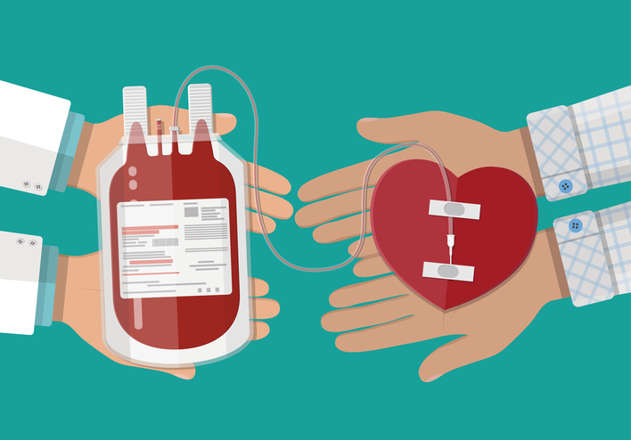
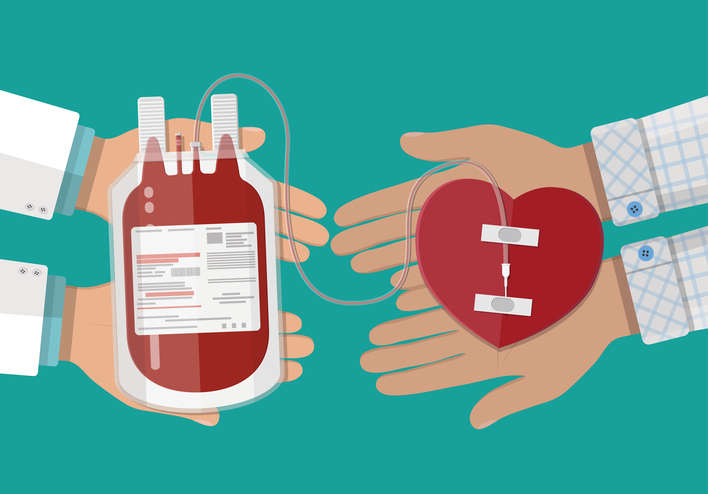

About Us
What is this all about?
Project Blood Bank App is an innovative approach to address global health. We provide immediate access to blood donors all over Pakistan, 24 hours a day, 7 days a week! Blood Bank App is one of several community organizations working together as a network that respond to disasters or emergency situations in an efficient manner.
What we do?
The ultimate goal of this project is to provide an easy-to-use, easy-to-access, efficient, and reliable way to get life-saving blood, free of cost. Blood Bank App works with network partners to connect blood donors and recipients through an automated SMS (text messaging) service or our mobile application. Our network of volunteer blood donors are ready to help save lives any time, any place.
How it works?
Our automated system works efficiently whenever someone needs a blood transfusion. Simply post a blood a request within our system, either on this website. As soon as a new blood request is raised, it is routed among our local volunteer blood donors. We know time matters! So we keep you updated with real-time notifications. Instead of having to search all over for a blood donor in an emergency situation, you can spend your time consoling the patient. We keep you updated at each step of the request process, from when a volunteer has been found to when blood is on its way.
 
